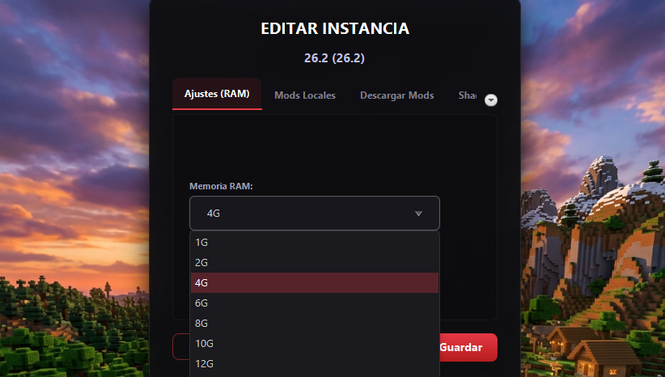

Cómo solucionar el error "Out of Memory" (Falta de Memoria)

Estás jugando tranquilamente, explorando una nueva cueva o cargando un mundo con cientos de mods, cuando de repente la pantalla se congela y Minecraft se cierra dejando un temido mensaje: "Out of Memory". Este es, sin duda, uno de los errores más comunes y frustrantes de toda la comunidad.
¿Por qué ocurre este error?
Minecraft, especialmente cuando se juega con modpacks (como los de Forge o Fabric), necesita cargar miles de texturas y bloques en la memoria temporal de tu computadora (la Memoria RAM). Por defecto, la mayoría de launchers solo le dan a Minecraft un máximo de 2 Gigabytes (2GB) de RAM. Si el juego necesita más de esos 2GB para funcionar, colapsa por asfixia.
Cómo solucionarlo usando LFZ Launcher
Aumentar la memoria RAM en LFZ Launcher es un proceso de un par de clics y no requiere tocar códigos extraños:
- Paso 1: Abre LFZ Launcher y dirígete a la pestaña de "Ajustes" o "Configuración".
- Paso 2: Busca la barra deslizante que dice "Asignación de Memoria (RAM)".
- Paso 3: Sube la cantidad asignada. Si juegas Vanilla (sin mods), 3GB a 4GB es perfecto. Si juegas modpacks pesados, recomendamos entre 6GB y 8GB.
- Paso 4: Guarda los cambios y vuelve a abrir el juego.
⚠️ Un Consejo de Oro: ¡No le des toda tu RAM!
Un error clásico que cometen los jugadores es pensar: "Tengo 16GB de RAM en mi PC, así que le daré 14GB a Minecraft para que vuele". ¡Esto es un grave error!
Tu sistema operativo (Windows) y los programas en segundo plano (como Discord, Spotify o Chrome) necesitan memoria para existir. Si le das todo a Minecraft, Windows se asfixiará, tu PC se congelará entera y terminarás forzando un reinicio de tu máquina. Como regla general, deja siempre al menos 4GB de RAM libres para tu computadora.